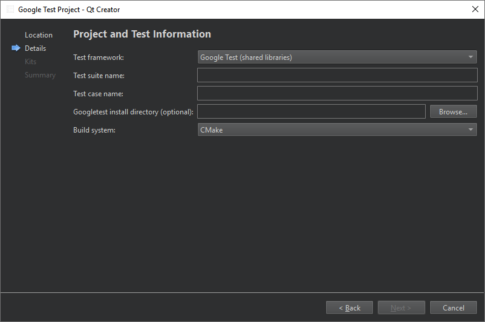

Create Google tests
To create a Google test:
- Go to File > New Project > Test Project.
- Select Google Test Project > Choose to create a project with boilerplate code for a Google test.
- In the Project and Test Information dialog, specify settings for the project and test:

- In Test framework, select Google Test (shared libraries) to link against Google Test or Google Test (headers only) to include necessary Google Test sources into the project.
- In Test suite name, enter a name for the test suite.
- In Test case name, enter a name for the test case.
- For a shared library test, you can set the path to a Google C++ testing framework installation in Googletest install directory (optional).
- For a header-only test, you can set the path to a googletest repository clone in Googletest source directory (optional).
- In Build system, select the build system to use for building the project: CMake, qmake, or Qbs.
Qt Creator creates the test in the specified project directory.
For more information about creating Google tests, see the Google Test Primer.
Note: While scanning for tests, the parser takes into account only files that directly or indirectly include gtest/gtest.h. Files that currently will not be built will be ignored.
See also How To: Test, Select the build system, Testing, and Test Results.